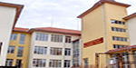
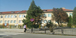
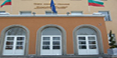
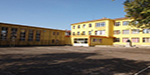
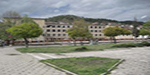
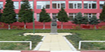
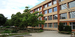
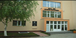
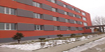

Средно общообразователно училище с изучаване на чужди езици „Св. Климент Охридски”
Средно общообразователно училище с изучаване на чужди езици „Св. КлиментОхридски” в Благоевград се обособява като самостоятелно през 1991 година. Xарактерно за училището е ранното езиково обучение...
Второ основно училище е основано през 1907 година и се е наричало Горноджумайско основно училище. През учебната 1907/1908 г. в училището е имало забавачница с 30 ученици и 4 отделения. Горното наименование се запазва до 1911 г...
Трето основно училище „Димитър Талев” е основано на 1 декември 1955 година под името Народно основно училище – V квартал. Първи директор е Славка Костадинова Пенкова. В началния курс има 8 паралелки, в средния – 7, а общият брой на учениците е 470...
Четвърто общообразователно училище „Димчо Дебелянов”
Училището е основано като начално през 1897 година. През 1936 година приема за свой патрон Димчо Дебелянов. То се помещава в самостоятелна триетажна сграда...
Пето средно общообразователно училище „Георги Измирлиев”
Пето средно общообразователно училище "Георги Измирлиев" в Благоевград, България е едно от големите училища в града и е основано през 1929 година. Първият учителски колектив се е състоял от 5 учители, а броят на учениците през втората учебна година е бил 229, от които 127 момчета и 102 момичета...
Шесто средно общообразователно училище „Иван Вазов”
Училището се намира в кв.Струмско, гр.Благоевград и е създадено през 1881 година. Първият учител е Георги Иванов Чорбаджийски, роден в с. Железница, Горноджумайска околия. Той е с килийно образование...
VІІ средно общообразователно училище „Кузман Шапкарев”
VІІ средно общообразователно училище „Кузман Шапкарев” е основано през 1973г. и се намира в централната част на град Благоевград, в близост до жп гарата и автогарата, на ул. „Илинден” № 13. Общ брой ученици І – ХІІ клас - 851 ученика. Строежът на училището е започнал през 1967 и е завършен през 1973 година...
Осмо средно общообразователно училище „Арсени Костенцев”
През есента на 1981 година в част от сградата на Строителния техникум в ІХ микрорайон се открива Осмо основно училище, което приема името на Арсени Костенцев. С това започва историята на съвременното училище „Арсени Костенцев”, което приема ученици от І до VІІІ клас...
ІХ общообразователно училище „Пейо Яворов” е основано през 1985 година. Първите 498 ученици са разпределени в 37 паралелки, с 26 учители и директор г-жа Гроздана Владикова. През 1990 година за директор е назначен г-н Йордан Йорданов, а от 1998 година, след спечелен конкурс, длъжността директор заема г-жа Василка Величкова...